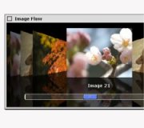
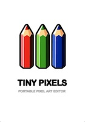
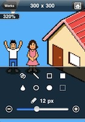
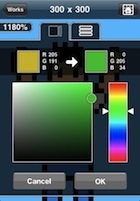
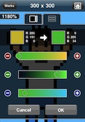

Software
- Bubu C++ MIT
- Compact full-text search engine written in C++. (Character bi-gram for UTF8-encoded text.)
- Now under developing...
- Motley AS3 Library AS3.0 MIT
- Simple window, slider, plot, and CoverFlow-like image viewer.
- nz_as3lib-0.1.0.tar.gz ( Last updated on 2008/05/19 )

- Language::MinCaml (CPAN module) Perl Artistic, GPL
- Perl implementation of MinCaml interpreter.
- Current version 0.01 ( Last updated on 2008/12/10 )
Applications
- TinyPixels Objective-C
- A pixel-wise painting application designed for iPhone and iPod touch.
- Now version 1.5 is available on the App Store.
- The lite version and the iPad edition are also available!




Visual Works